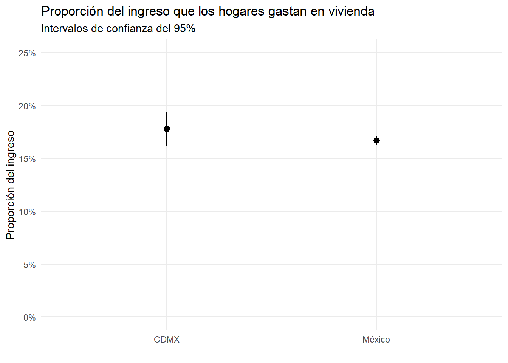
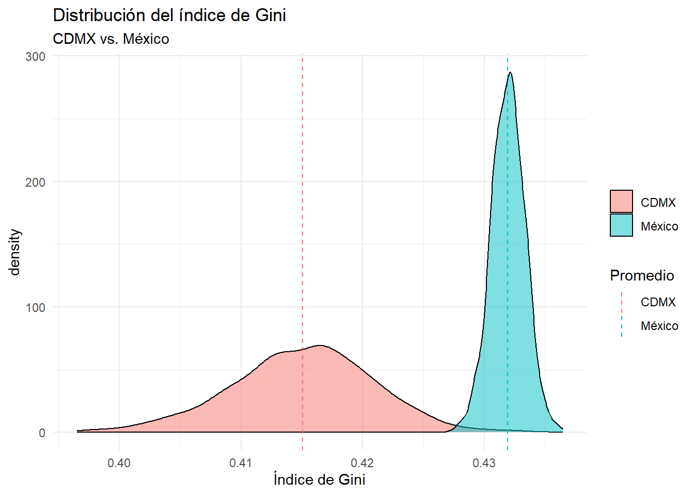

La Tarea 2 debe entregarse el miércoles 23 ed abril. La entrega consiste en un archivo PDF que incluya las respuestas a las preguntas planteadas, así como el código .qmd que generó las respuestas. Para descargar el archivo .qmd, haz clic aquí.
Escribe todas tus respuestas en la sección de respuestas al final de este archivo.
Escribe tu nombre en el campo author del YAML.
1 Preguntas
1.1 Pruebas de hiótesis y el gasto en vivienda
La Encuesta Nacional de Ingresos y Gastos de los Hogares (ENIGH) 2022 contiene información muy rica sobre los gastos y los ingresos de los hogares en México. La tabla concentradohogar2022 incluye información sobre el ingreso de los hogares, así como el gasto en vivienda. En esta sección, vamos a probar algunas hipótesis sobre la proporción del ingreso que los hogares gastan en vivienda.
El siguiente código carga la base de datos cocnentradohogar2022, cuyo nivel de observación es el hogar. La información geográfica más detallada que incluye está en la variable ubica_geo, que se compone del código de la entidad en los primeros dos dígitos, seguido del código del municipio en los siguientes tres dígitos. Por ejemplo, el código 09002 corresponde al municipio 002 de la entidad 09 que corresponde a Azcapotzalco, Ciudad de México.
El siguiente código también carga una tabla llamada municipios, que contiene el nombre de las demarcaciones territoriales del país.
set.seed(123)pacman::p_load(tidyverse, labelled, janitor)load("//IMSS-EDS/Users/esteban.degetau/OneDrive - INSTITUTO TECNOLOGICO AUTONOMO DE MEXICO/Documentos/My courses/Statistical tools in R/assignments/data/concentradohogar2022.RData")municipios <-read_csv("//IMSS-EDS/Users/esteban.degetau/OneDrive - INSTITUTO TECNOLOGICO AUTONOMO DE MEXICO/Documentos/My courses/Statistical tools in R/assignments/data/municipios.csv") |> janitor::clean_names()
Rows: 2478 Columns: 12
── Column specification ────────────────────────────────────────────────────────
Delimiter: ","
chr (12): CVEGEO, CVE_ENT, NOM_ENT, NOM_ABR, CVE_MUN, NOM_MUN, CVE_CAB, NOM_...
ℹ Use `spec()` to retrieve the full column specification for this data.
ℹ Specify the column types or set `show_col_types = FALSE` to quiet this message.
dict <-generate_dictionary(concentradohogar2022)
Corre el código de arriba para cargar las tablas que vamos a analizar. Crea una nueva tabla llamada hogares en donde agregues la información de la tabla municipiosa la tabla concentradohogar2022. La nueva tabla deberá tener (i) todas las observaciones y todas las columnas de concentradohogar2022, y (ii) todas las columnas de municipios.
Prepara la tabla hogares para trabajar. La variable ingtrab contiene la Suma del ingreso obtenido por trabajo, como subordinado, como independiente y de otros trabajos. Tomaremos esta variable como el ingreso total del hogar. La variable vivienda contiene el Gasto en vivienda, servicios de conservación, energía eléctrica y combustibles. Todos los gastos e ingresos de la tabla son trimestrales.
Quita los hogares que no tienen información sobre el ingreso total o el gasto en vivienda.
Quita los hogares que tienen un ingreso total igual a cero.
Winzoriza el 1% de los valores atípicos en las variables ingtrab y vivienda por ambos lados. Puedes usar la función definida a continuación:
Crea una nueva variable que contenga la proporción del ingreso que los hogares gastan en vivienda.
my_winsorize <-function(x, q =0.01) { left <-quantile(x, q, na.rm =TRUE) right <-quantile(x, 1- q, na.rm =TRUE) x[x < left] <- left x[x > right] <- rightreturn(x)}
Evalúa la hipótesis de que el hogar promedio en la Ciudad de México gasta el 30% de su ingreso en vivienda. Esto es, evalúa la prueba de hipótesis dada por \(H_0: \bar p_{CDMX}=0.3\) vs. \(H_1: \bar p_{CDMX} \ne 0.3\), donde \(\bar p_{CDMX}\) es el promedio de la proporción de ingreso que los hogares de la Ciudad de México gastan en vivienda. Usa un nivel de significancia de 0.05.
Filtra los hogares ubicados en la Ciudad de México.
Calcula el promedio de la proporción del ingreso que los hogares de la Ciudad de México gastan en vivienda, ponderando por el factor de expansión factor.
Calcula el error estándar del estimador de interés, \(\hat p_{CDMX}\). Toma en cuenta que la ENIGH solo encuestó a \(n\) hogares.
Calcula un intervalo de confianza.
¿Rechazas la hipótesis nula con un nivel de significancia de 0.05? ¿Por qué?
Evalúa la hipótesis de que el hogar promedio en la Ciudad de México destina una proporción de sus ingresos al gasto en vivienda igual que el hogar promedio del país. Usa un nivel de significancia de 0.05.
Escribe la hipótesis nula y la alternativa.
Repite el procedimiento de la pregunta anterior, pero ahora para todos los hogares del país.
Vas a presentar tus resultados a una persona tomadora de decisiones en el gobierno de la Ciudad de México. Crea una gráfica en donde resumas tus resultados. Pista: usa la función ggplot::geom_pointrange() para mostrar los intervalos de confianza que ya calculaste.
Discute tus resultados. ¿Qué conclusiones puedes sacar sobre el gasto en vivienda de los hogares de la Ciudad de México?
1.2 Pruebas de hipótesis con remuestreo y la desigualdad de ingresos
Seguiremos usando la tabla hogares que creaste en la pregunta anterior. En particular, queremos evaluar la hipótesis de que la desigualdad de ingresos en la Ciudad de México es igual que en todo el país.
Hay muchas métricas para medir la desigualdad de ingresos. En esta tarea, vamos a usar el índice de Gini. El índice de Gini puede tomar valores entre 0 y 1, donde 0 significa que todos los hogares tienen el mismo ingreso (completa igualdad) y 1 significa que un hogar tiene todo el ingreso mientras que los demás no tienen nada (completa desigualdad).
Calcular el índice de Gini puede ser complicado. Afortunadamente, el paquete DescTools incluye una a la función DescTools::Gini() que lo hace por nosotros.
Ve a la documentación de la función Gini() y revisa cómo funciona. ¿Qué argumentos le tienes que pasar a la función para calcular el índice de Gini? ¿Qué tipo de objeto regresa? Intenta calcular el índice de Gini para el vector 1:10 y para el vector rep(10, 10).
Calcula el índice de Gini que mida la desigualdad de ingresos de los hogares de la Ciudad de México y para los hogares del resto del país. Usa el factor de expansión factor para calcular el índice de Gini ponderado. Discute tus resultados.
Describe qué hace la función resample_gini que está descrita a continuación:
Evalúa la hipótesis de que la desigualdad de ingresos en la Ciudad de México es igual que en el resto del país.
Escribe la hipótesis nula y la alternativa.
Usa remuestreo bootstrap para crear una distribución empírica de tamaño 1,000 del coeficiente de Gini para los hogares de la Ciudad de México y para los hogares del resto del país.
Crea una gráfica donde muestres las dos distribuciones que generaste. Puedes usar la función ggplot2::geom_density() para graficar las distribuciones.
¿Rechazas la hipótesis nula? ¿Por qué?
Discute tus resultados.
2 Respuestas
2.1 Pruebas de hiótesis y el gasto en vivienda
La tabla hogares se crea con el siguiente código.
hogares <- concentradohogar2022 |>left_join(municipios, by =c("ubica_geo"="cvegeo"))
Preparamos la tabla hogares para trabajar.
hogares$ingtrab |>summary()
Min. 1st Qu. Median Mean 3rd Qu. Max.
0 12171 29899 40360 54328 5891914
Min. 1st Qu. Median Mean 3rd Qu. Max.
538 19076 34631 44643 58721 210218
hogares$vivienda |>summary()
Min. 1st Qu. Median Mean 3rd Qu. Max.
0 1047 2192 3274 3930 21956
hogares$prop_vivienda |>summary()
Min. 1st Qu. Median Mean 3rd Qu. Max.
0.00000 0.03048 0.06212 0.16681 0.12926 33.20294
Rechazamos la hipótesis nula de que el hogar promedio en la Ciudad de México gasta el 30% de su ingreso en vivienda, si el intervalo de confianza no incluye el valor 0.3.
cdmx <- hogares |>filter(cve_ent =="09")cdmx_ci <- cdmx |>summarise(p =sum(prop_vivienda * factor) /sum(factor),n =n(),sd =sd(prop_vivienda),se = sd /sqrt(n),lower = p -1.96* se,upper = p +1.96* se )cdmx_ci
# A tibble: 1 × 6
p n sd se lower upper
<dbl> <int> <dbl> <dbl> <dbl> <dbl>
1 0.178 2275 0.395 0.00829 0.162 0.194
Podemos rechazar la hipótesis nula con un nivel de significancia de 0.05, porque el intervalo de confianza no incluye el valor 0.3.
Rechazamos la hipótesis nula de que el hogar promedio en la Ciudad de México gasta el mismo porcentaje de su ingreso en vivienda que el hogar promedio del país, si los intervalos de confianza de ambas poblaciones no se superponen.
mex_ci <- hogares |>summarise(p =sum(prop_vivienda * factor) /sum(factor),n =n(),sd =sd(prop_vivienda),se = sd /sqrt(n),lower = p -1.96* se,upper = p +1.96* se )mex_ci
# A tibble: 1 × 6
p n sd se lower upper
<dbl> <int> <dbl> <dbl> <dbl> <dbl>
1 0.167 79353 0.618 0.00220 0.163 0.171
Podemos rechazar la hipótesis nula con un nivel de significancia de 0.05, porque los intervalos de confianza de las dos poblaciones no se superponen.
Gráfica de intervalos de confianza.
ggplot() +geom_pointrange(data = cdmx_ci,aes(x ="CDMX",y = p,ymin = lower,ymax = upper ) ) +geom_pointrange(data = mex_ci,aes(x ="México",y = p,ymin = lower,ymax = upper ) ) +scale_y_continuous(labels = scales::percent_format(accuracy =1), limits =c(0, 0.25)) +labs(title ="Proporción del ingreso que los hogares gastan en vivienda",subtitle ="Intervalos de confianza del 95%",y ="Proporción del ingreso",x ="" ) +theme_minimal()

Resulta sorprendente que el hogar promedio destine 10% de sus ingresos a vivienda. Esto es relativamente bajo, pues sabemos que el salario promedio mensual de los trabajadores afiliados al IMSS en la CDMX rondó cerca de los $18,000. En un hogar con una sola fuente de ingresos, esto implicaría un gasto en vivienda de solo $1,800, incluyendo renta. Esto se puede deber a que los hogares incluyen a varios miembros con varias fuentes de ingreso, adicionales al trabajo formal.
2.2 Pruebas de hipótesis con remuestreo y la desigualdad de ingresos
La función Gini() requiere un vector numérico como argumento. Regresa un número entre 0 y 1, que es el índice de Gini.
pacman::p_load(DescTools)Gini(1:10)
[1] 0.3333333
Gini(rep(10, 10))
[1] 0
Cálculo del índice de Gini para la Ciudad de México y el resto del país.
La función resample_gini() toma una tabla, genera una muestra aleatoria del mismo tamaño con reemplazo y devuelve el coeficiente de Gini para el ingtrab de la muestra aleatoria, ponderado por el factor de expansión. Esta función es una iteración del ejercicio de remuestreo por Bootstrap.
Evaulación de la hipótesis de que la desigualdad de ingresos en la Ciudad de México es igual que en el resto del país.
\(H_0: Gini_{CDMX} = Gini_{México}\) vs. \(H_1: Gini_{CDMX} \ne Gini_{México}\)
Podemos usar replicate() para crear una distribución empírica del índice de Gini para los hogares de la Ciudad de México y para los hogares del resto del país.
ggplot() +geom_density(aes(x = cdmx_gini_distribution, fill ="CDMX"),alpha =0.5 ) +geom_density(aes(x = mex_gini_distribution, fill ="México"),alpha =0.5 ) +geom_vline(aes(xintercept =mean(cdmx_gini_distribution), color ="CDMX"),linetype ="dashed" ) +geom_vline(aes(xintercept =mean(mex_gini_distribution), color ="México"),linetype ="dashed" ) +labs(title ="Distribución del índice de Gini",subtitle ="CDMX vs. México",x ="Índice de Gini",color ="Promedio",fill ="" ) +theme_minimal()

La gráfica muestra que solo en muy pocos remuestreos, el índice de Gini de la Ciudad de México es menor que en el resto del país. Esta evidencia gráfica basta para mostrar que podemos rechazar la hipótesis nula de que la desigualdad de ingresos en la Ciudad de México es igual que en el resto del país.